Ladda upp ett foto, klistra in en prompt, och få tillbaka något helt annat: ett Panini-fotbollskort, en 3D-figur, ett proffsporträtt, en kändisselfie och mer. Nio färdiga prompter, kopiera och kör.
Klistra in prompterna i en AI-bildmodell som kan redigera en uppladdad bild. Jag använder Gemini (Nano Banana) eller ChatGPT. Prompterna är på engelska, men resultatet blir vad du vill ändå. Vissa prompter har inget att fylla i, då klistrar du bara in. De med hakparentes byter du ut mot dina egna uppgifter.
Porträtt blir ett Panini-spelarkort i VM-stil.
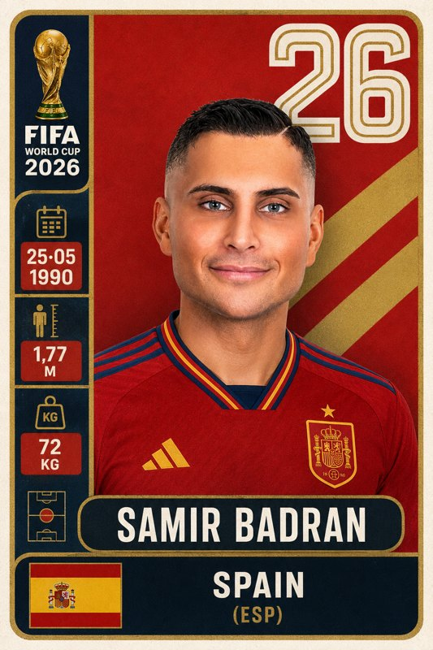
[FIRST NAME LAST NAME] ditt namn[DATE] födelsedatum[HEIGHT] längd, t.ex. 182 cm[WEIGHT] vikt, t.ex. 78 kg[CLUB / COUNTRY] och [COUNTRY] klubb eller land, och landet vars flagga du vill haTransform the uploaded portrait into a premium football trading card inspired by World Cup sticker albums. The person is a football player named [FIRST NAME LAST NAME], born [DATE], height [HEIGHT], weight [WEIGHT], playing for [CLUB / COUNTRY]. Use the flag of [COUNTRY]. Keep the face recognizable and realistic. Create a retro 2026 World Cup card design with background, bold "26" graphic, trophy icon, vertical side design, dark rounded nameplates, white uppercase typography, and nostalgic Panini-style football sticker aesthetics
Porträtt blir en glansig 3D-figur i Pixar-stil.
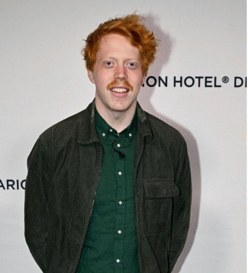
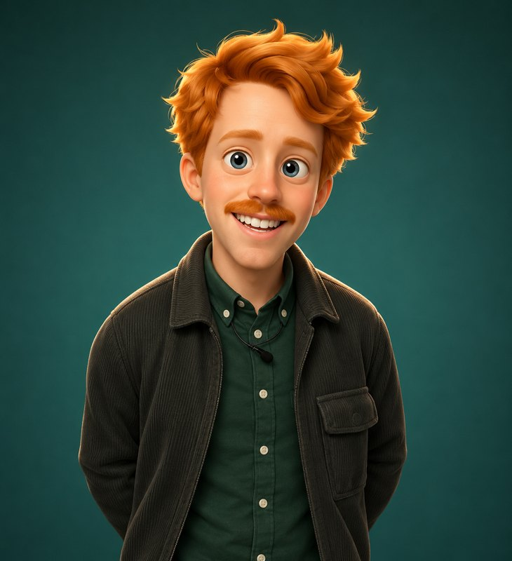
Transform the person from the attached photo into a polished, stylized 3D cartoon chibi/figure that matches the reference style. Keep the face fully recognizable, but exaggerate proportions with a slightly elongated head, large expressive eyelids, and soft rounded forms. Use a glossy plastic-like skin surface with smooth gradients and subtle specular highlights. Preserve the original hair style and accessories in a simplified, stylized way. Light the character with soft studio lighting and a gentle rim light for separation, set against a solid color background. The final result should feel clean, high-end, and Pixar-inspired, with the look of a professional 3D render and minimal surface noise.
Suddigt foto blir skarpt magasinsporträtt.
[4K/8K] upplösning[warm/cool/neutral] färgton[50/75/100] skärpa i procent[subtle/medium/strong] styrka på HDRTake the uploaded photo and remaster it to [4K/8K] resolution. Enhance skin texture with natural detail, sharpen eyes and hair strands, boost [warm/cool/neutral] tones, increase clarity to [50/75/100]%, add [subtle/medium/strong] HDR effect. Keep the original composition. Output: ultra-realistic, magazine-quality portrait.
Vardagsfoto blir dramatiskt studioporträtt på orange/röd bakgrund.
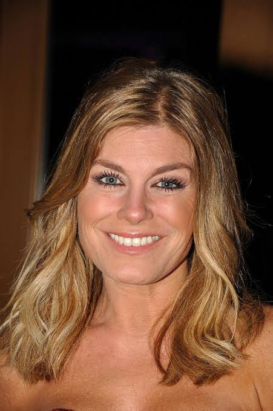
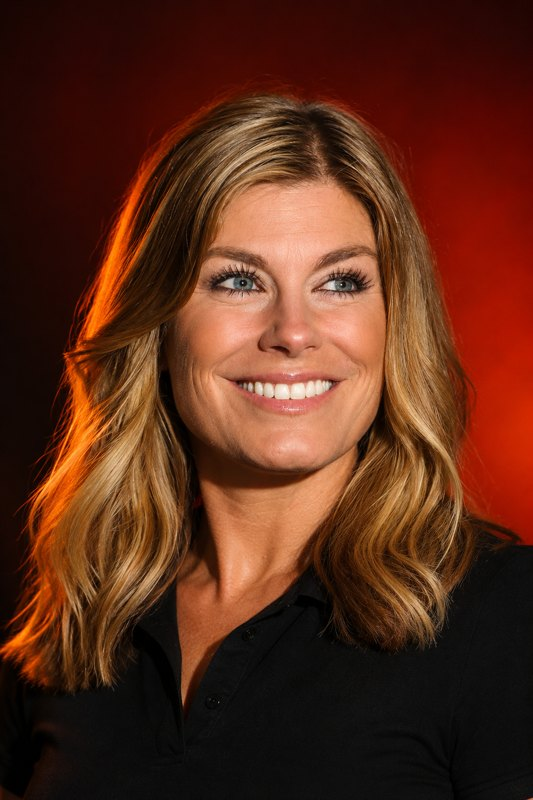
Reference Face : Use the attached image for face only. Preserve exact facial identity, skin tone, texture, and hairstyle. Do not modify, beautify, or change proportions. Ignore pose and clothing from reference. Pose & Direction Low-angle dominant pose. Body slightly left, face looking right side of frame. Gaze slightly upward. Do NOT flip or mirror.Styling & Lighting Fitted black polo shirt. Dramatic high-contrast lighting with strong left key light and soft rim light. Orange to deep red smooth gradient background. Technical Settings Aspect ratio 2:3 vertical (Pinterest). 4K quality. 85mm portrait look, shallow depth of field, sharp eyes, natural skin texture, no text, no watermark.
Behåller rummet exakt och trycker in gigantiska folieballonger.
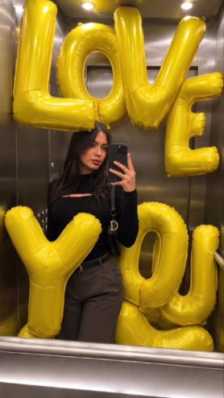
[LOVE YOU] texten eller siffran du vill ha som ballongerUsing the attached image as an exact base, preserve the entire original location without any changes: no changes to the architecture, layout, lighting, colors, perspective, or existing objects. The photograph must remain completely untouched and recognizable. Add only a giant, almost hyper-realistic inflatable inscription: [LOVE YOU]. Each letter or number must be a separate oversized inflatable object, individually placed and scaled, far larger than human height. All symbols are made of bright yellow glossy foil, with thick inflatable material, visible seams, soft folds, and realistic deformation caused by air pressure. The individual inflatable balloons aggressively fill and overcrowd the space, pressing against the walls, ceiling, floor, and furniture. Each symbol bends, compresses, and deforms naturally where it touches other surfaces, with realistic weight, distance, depth, and correct perspective.
Personen förblir fotografisk, världen runt omkring blir Minecraft-kuber.
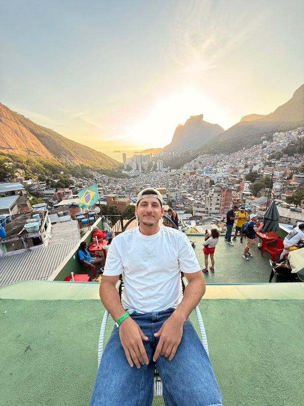
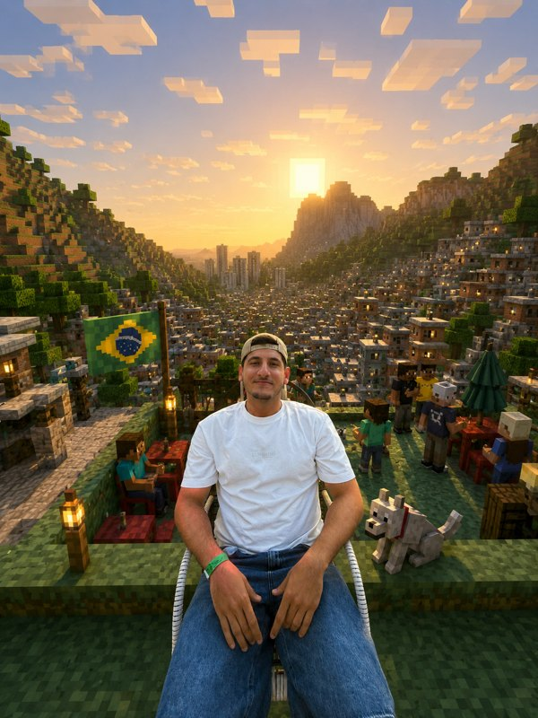
{ "task": "image_transformation", "style": { "overall_aesthetic": "High-quality cinematic Minecraft screenshot.", "rendering_technique": "Mixed-media: Photorealistic subject embedded in a voxel-based environment." }, "subject_rules": { "main_subject": "The human person from the reference image must remain completely photorealistic and unchanged. No pixelation or block filters on their body, clothing, or face.", "interacting_objects": "CRITICAL: Any non-human object in direct physical contact with the subject e.g. or nearby pets dogs MUST be converted into Minecraft block models or mobs. A real dog becomes a Minecraft wolf." }, "environment_rules": { "background_analysis": "Analyze the reference image background structure and recreate it entirely out of Minecraft voxel blocks.", "elements": "Trees, terrain, paths, and foliage must be cubic blocks with pixel art textures.", "atmosphere": "Replicate the foggy forest atmosphere using blocky volumetric fog layers appropriate for Minecraft." }, "composition_and_lighting": { "camera": "Maintain the exact camera angle and framing from the reference photo.", "lighting": "Minecraft daylight with gentle haze and consistent block-based shadows." } }
enhance
Enkel produktbild blir studioreklam med ingredienserna runt omkring.
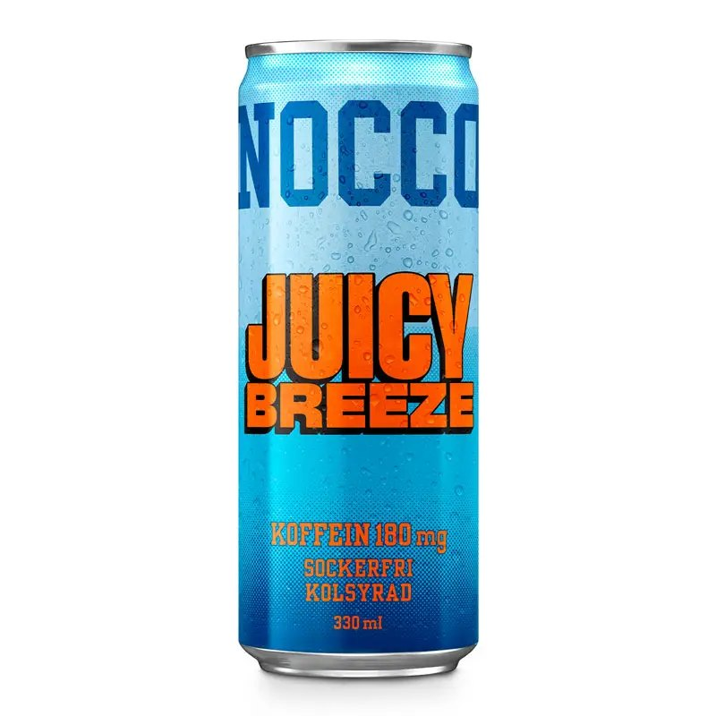
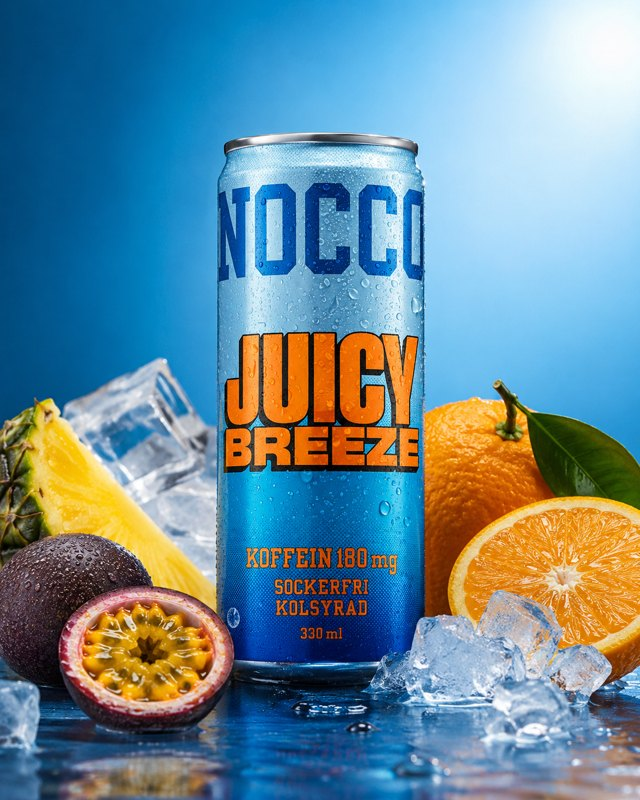
product studio transformation, isolate the product from the reference image and rebuild as a premium ad composition, hero product centered and sharply in focus, surrounded by its key ingredients arranged with intention and depth, ingredients fresh and tactile, sliced, crushed, or whole depending on context, composition balanced but not perfectly symmetrical, clean surface with subtle reflections, background designed to match the product's color palette and mood, soft gradients or tonal transitions, high-end studio lighting with controlled highlights and gentle shadow falloff, crisp edges with slight natural shadow grounding the product, micro-details visible like condensation, texture on ingredients, and fine surface imperfections, minimal but intentional negative space, no clutter beyond ingredients, polished commercial finish without looking artificial, accurate color rendering and realistic material response
Sätter plagget från bild 2 på personen i bild 1, allt annat orört.
[left/right/above] varifrån ljuset kommer[fashion editorial / lookbook / street style / studio campaign] stilPhoto 1 is the reference model. Photo 2 is the outfit/garment to dress them in. Realistically place the exact outfit from Photo 2 onto the model in Photo 1. Match: fabric drape and weight to the model's body position, lighting and shadow from the original scene (light source: [left/right/above]), fabric texture and color exactly as shown in Photo 2. Keep: model's face, hair, skin tone, pose, and background completely unchanged. Fit the garment naturally to the model's proportions. Result must look like the original photo, not a composite. Style: [fashion editorial / lookbook / street style / studio campaign].
Din selfie blir en bild där du står bredvid en kändis.
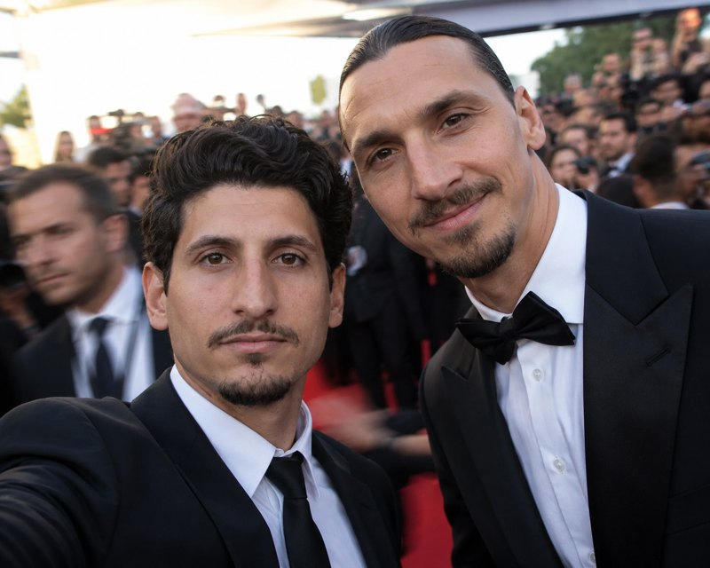
[celebrity name] kändisen[red carpet / backstage / casual street / restaurant] plats[flash selfie / natural / studio] ljus[slight motion blur / bokeh background / crowd in background] bakgrundseffektUsing the uploaded photo as the base person, create a realistic POV selfie with [celebrity name] standing next to them. Location: [red carpet / backstage / casual street / restaurant]. Lighting: [flash selfie / natural / studio]. Both people looking at the camera, natural expressions. Add [slight motion blur / bokeh background / crowd in background]. Style: candid celebrity encounter photo.
Jag hjälper dig komma igång, från första frågan till färdig rutin. Hör av dig så tar vi reda på om och var AI passar för dig eller ditt företag.
Boka ett strategisamtal